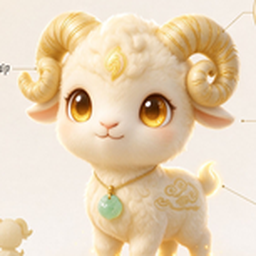
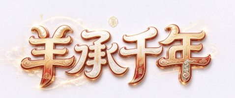
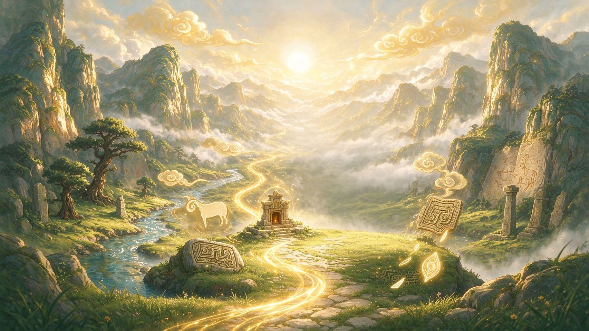
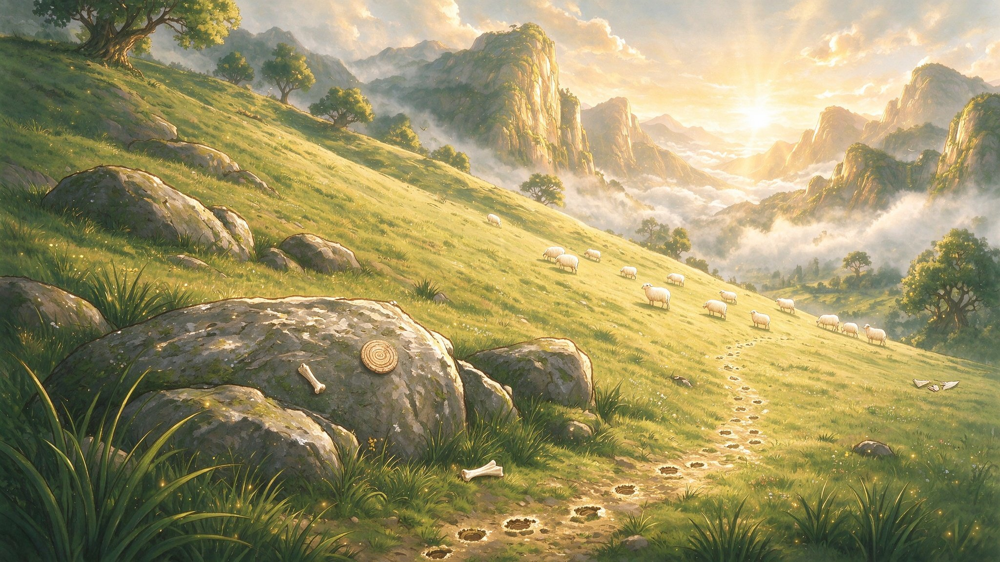
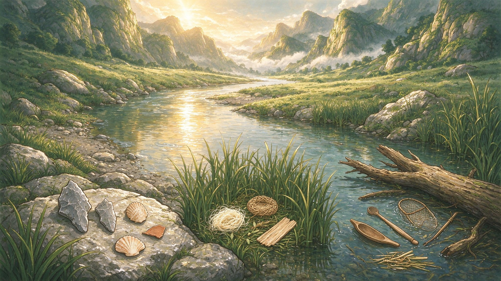
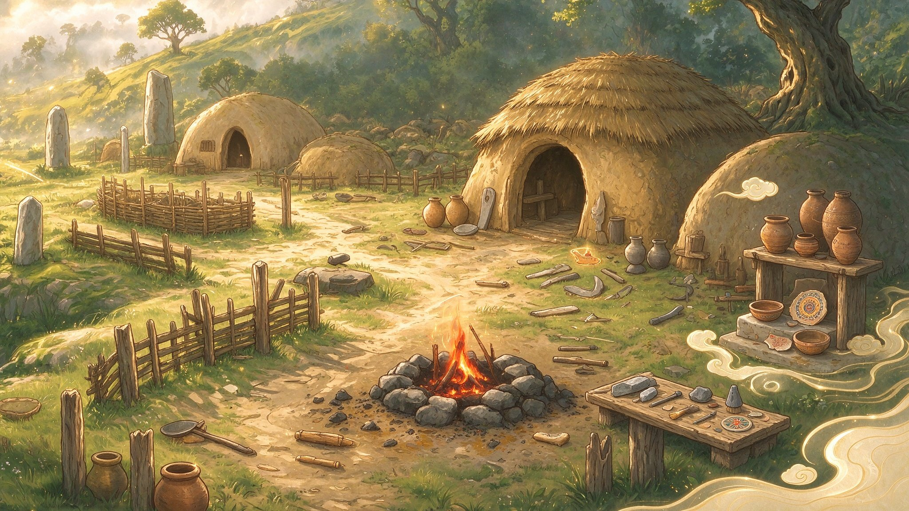
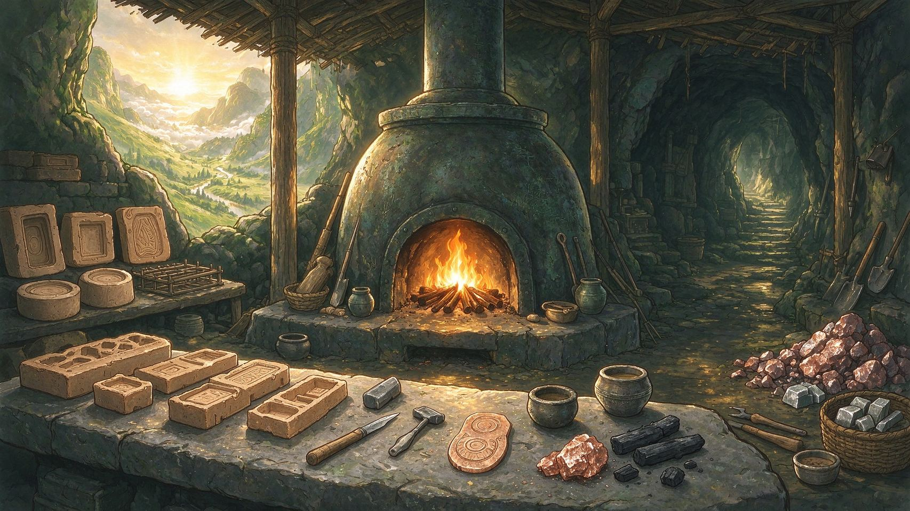

羊承千年
中国生肖羊文物数字艺术博物馆 · THE MILLENNIUM OF GOAT CULTURE
“从一件文物开始，穿越千年，寻找属于中国生肖羊的文化印记。”
横版 16:9 · 建议横屏游玩 · 进度自动保存在本机

点击标题，继续旅程
02 · 游戏说明
欢迎来到
羊文化时光档案馆
千年的时光中，羊的形象出现在青铜器、玉器、陶器与传统吉祥纹样之中。如今，历史档案被打乱，文物的时间顺序需要重新排列。请你成为一名时光探索者，找回散落在历史中的羊文化印记。
任务步骤
操作提示

第一章 · 远古初生
远古山谷

第一章 · 山坡寻踪
寻找自然留下的痕迹

第一章 · 河边寻源
寻找远古生活材料

第一章 · 原始聚落
生活器物里的远古故事

第二章 · 青铜礼韵
青铜时代
第二章 · 青铜工坊
炉火与陶范
第二章 · 纹饰秘境
寻找隐藏的纹样
第二章 · 礼器寻珍
青铜礼器陈列
第一关 · 开启历史时间轴
寻找羊文化的历史起点
请将散落的历史印记，按照年代从早到晚排列。时间轴从远古向现代延伸。
第二关 · 文物年代排序
把五张文物卡片拖到正确年代
第三关 · 羊文化探索与纹样收集
寻找散落的羊文化密码
终章 · 千年羊韵
千年流转，羊韵不息。
从历史文物中寻找文化根脉，在数字艺术中创造新的表达。
知识挑战
阿金
千年灵境守护者
千年瑞图 · 画卷收藏
千年瑞图 · 远古画卷
第一幅 · 远古画卷 · 羊之初
点一个纹样，再点画卷上对应的位置，把三条线索放进画卷。
千年瑞图 · 青铜画卷
第二幅 · 青铜画卷 · 青铜礼韵
点一个纹样，再点画卷上对应的位置，把三条线索放进画卷。
阿金手记 · 远古观察记录
走一路，记一路。集齐 9 条记录，就是一份完整的远古生活手记。
重新开始？
将清空本次游戏进度（排序、纹样、设计与作品名称），返回首页。
已暂停
阿金在等你回来。提示计时已暂停，不会再催你。
玩法帮助 · 阿金小课堂
· 点击：点金色标记、按钮、卡片，就可以进入场景、打开知识、收集物品。
· 拖拽：按住碎片、卡片拖到目标位置，靠近会自动吸附；也可以先点一下选中，再点目标位置放入。拖拽时阿金不会催你。
· 旋转：拼图碎片带 ↻ 按钮，点一下转 90°；双击碎片也可以旋转。位置和角度都对了才会吸附。
· 滑动：在器物观察界面里，左右滑动（或点「正面 / 侧面 / 俯视」）可以换角度看器物。
· 按住盖章：把印章按住 1.2 秒别松手，松手太早要重按。
· 任务面板：左上角就是当前任务，跟着金色光圈走就行；点「💡 提示」随时看这一步该怎么做，点「–」可以收起面板。
· 暂停：顶栏「⏸ 暂停」可以停下来歇一歇，提示计时也会停住。